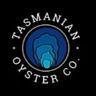

Environmental status
Awaiting readings
Salinity—ppt
Previous 24h rainfall—mm
Previous 3-day rainfall—mm
Previous 7-day rainfall—mm
No readings entered yet.

Select the bay you want to monitor.
Duck Bay • Salinity ≥ 32.5 ppt • River flow <5.0 m³/s • 7-day rainfall closure threshold: 40.0 mm • 3-day rainfall closure threshold: 25.0 mm
No readings entered yet.
NRE Tasmania station 14214 • Environmental control: 5 m³/s
Times shown are the NRE portal reading times that first recorded the river on the new side of the 5.0 m³/s limit.
Previous 7-day total is observed rainfall; the next 7 days are forecast rainfall supplied by Open-Meteo.
Read-only — central environmental settings.
Duck Bay Management Plan (issued 23/12/2025): 3-day rainfall ≥25 mm is a combined environmental closure criterion. This limit is fixed by the management plan.
Three salinity measurements at low tide: T0, T24 and T48. This table remains visible on the public page.
| Check | Salinity date / time | Low tide time | Salinity (ppt) |
|---|---|---|---|
| T0 | — | — | — |
| T24 | — | — | — |
| T48 | — | — | — |
Waiting for all environmental controls to be within limits before the 48-hour check starts.
ShellMAP Management Plan issued 23/12/2025.
Important: Formal ShellMAP closure/open decisions, including biotoxin, phytoplankton, sewage, microbial and other regulatory events, can override these environmental indicators. Check the current ShellMAP Classification Notice before harvesting.
Open current ShellMAP Classification Notice • Open Duck Bay Management Plan
Duck Bay has no routine meat-testing trigger in the 23/12/2025 Management Plan. Record E. coli results here only when testing is directed for a closure/re-opening or investigation. Public view is read-only.